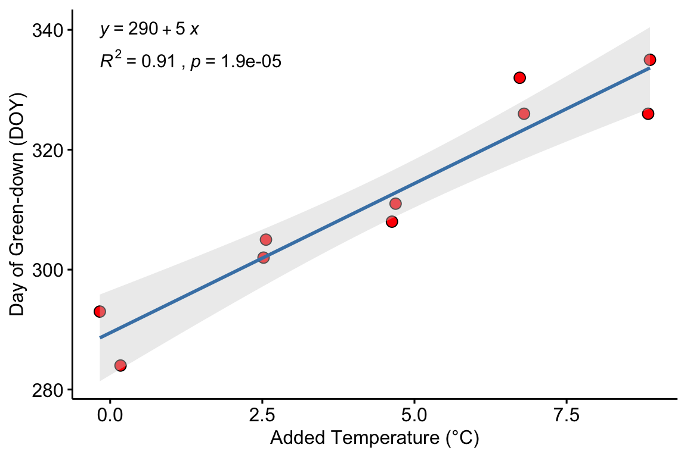
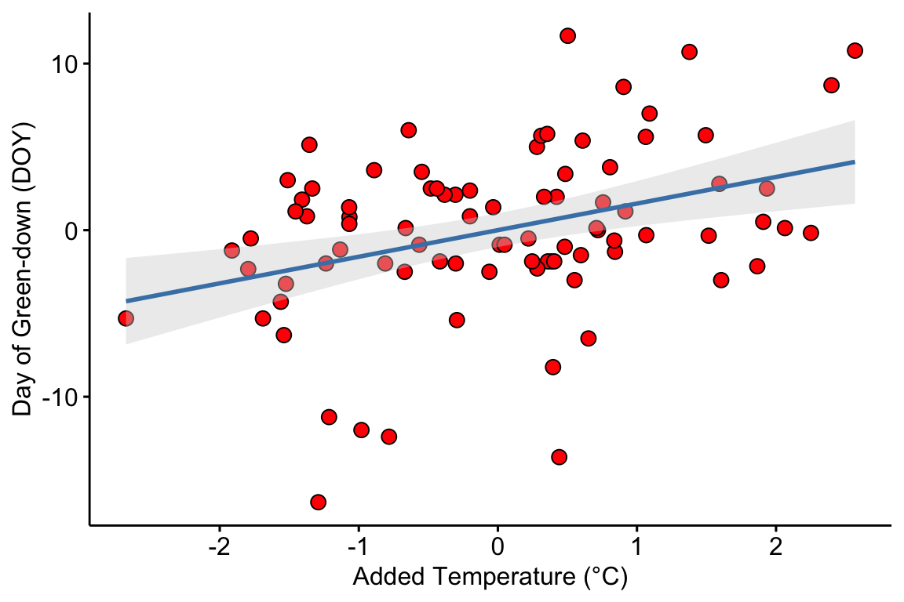

Chapter 5 Plotting Models
So, along the lines of Sarah Susanka’s “Not So Big House,” Kolbert asks the group, “What would a Pretty Good House look like?” – Michael Maines2
When it comes to plotting, many researchers mindlessly generate plots that are easily generated by the software and look like the typical plots published in the field. The resulting plot is comforting because it is familiar, not because it effectively communicates what a good plot should communicate – the model results.
Plots should be the focus of both the reader and researcher. Instead of mindless plotting, a researcher should ask a series of questions of every plot
- What is the point of each element in a plot?
- Are these the points that I most want to communicate?
- Are there better practices for communicating these points?
- Are the points that I want to communicate that are not covered by these elements?
The answer to these questions should inform what is and what is not plotted. The result is a pretty good plot. The idea of a pretty good plot is borrowed from the “pretty good house” concept that grew out of a collaborative group of builders and architects in Northern New England. The “pretty good house” combines best practices for building an earth friendly, high performance home at a reasonable cost. There is no pretty good house governing body that awards certificates of achievement but, instead, a set of metrics and a collection of building practices that can achieve these.
A typical pretty good plot contains some combination of
- Modeled effects with confidence intervals. “Effects” are the coefficients of a model, or contrasts constructed from the model, such as pairwise differences between the means of the levels of a factor. Inferences are typically made from the estimated effects
- Modeled means and standard errors or confidence intervals.
- Raw data points or a summary distribution of these.
5.1 Pretty good plots show the model and the data
The data to introduce best practices in plotting come from “The enteric nervous system promotes intestinal health by constraining microbiota composition”3. The researchers found that zebrafish with a sox10 mutation lacked an enteric nervous system and developed a microbiota-dependent inflammation. The paper includes several experiments to probe the hypothesis that the ENS regulates microbial community composition and, in turn, inflammatory status. The data here are from Fig. 2 of the paper, which reports the results of one of a set of experiments to test the hypothesis that microbiota from sox10 mutants (that induce inflammation) are necessary and sufficient to induce inflammation in wildtype guts. In this experiment, homogenized intestines and their microbial community from four different donor groups were added to the flasks housing the zebrafish. The response variable is neutrophil count. Neutrophils are a white blood cell that increase in number during inflammation. The four treatment levels are the different donors of intestinal microbes: wt (wild type), gf (germ free, so no microbes are transferred), iap_mo (a control “for the possibility that nonbacterial factors such as host pro-inflammatory cytokines rather than microbial derived factors cause transmissible intestinal inflammation”), and sox10.
5.1.1 Pretty good plot component 1: Modeled effects plot
Biologists infer the biological consequences of a treatment by interpreting the magnitude and sign of treatment “effects”, such as the differences in means among treatment levels. Why then do we mostly plot treatment level means, where effects can only be inferred indirectly, by mentally computing differences in means? Instead, our primary plots should be effects plots, which directly communicate treatment effects, and the uncertainty in the estimates of these effects.

Figure 5.1: Effects Plot
The y-axis contains all pairwise comparisons among the four treatment levels. The x-axis is the response, which is the ratio of the means of the two groups in the comparison. For example, the top comparison shows that guts in fish exposed to sox10 donors have 2.7X more neutrophils per length of gut than guts in fish exposed to wild type donors. The bars are 95% confidence intervals, with is the range of effects that are compatible with the observed data at the 95% level (confidence intervals are disscussed in depth in chapter xxx.). The small end of the interval for the sox10/wt comparison is 1.31, meaning that effects as small as 31% increased neutrophil count are compatible with the data. It is up to the research community to decide if 2.7X or 1.31X are physiologically meaningful effects. p-values from the hypothesis tests are included.
5.1.2 Pretty good plot component 2: Modeled mean and CI plot
Often the means of the treatment levels are meaningful, for example, if neutrophils per length of gut is a standard measure then researchers working in this area will be familiar with usual and unusal values. The data used in Fig 5.1 are used to plot means and confidence intervals of the mean using a bar chart, which is a pretty good chart type for measures such as counts in which negative values are prohibited and zero is meaningful.

Figure 5.2: Mean and error plot
Fig. 5.2 plots the modeled means, represented by the tops of the bars, the modeled 95% confidence intervals of each mean, represented by the error bars, and the p-values for all pairwise comparisons. What do I mean by modeled means and error intervals?
- Modeled means and error intervals are estimated from the statistical model. Many published plots are of raw means and error intervals, meaning that the mean and error for each treatment level is computed only using the response measures in that treatment level.
- A modeled mean will often be equal to the raw mean, but this will not always be the case, for example if there are covariates in the model (Chapter xxx).
- Modeled error intervals are never the same as the raw error intervals, and are commonly conspicuously different. Almost always, we should plot modeled means and error intervals, since these represent the statistics that are relevant to inference.
Fig. 5.2 also plots the raw count data as “jittered” black dots. “Showing the data” is a pretty good feature of a plot because it allows the reader to get a sense of the underlying sample size and distribution including outliers, which can be used to mentally model check the published statistical analysis. For example, the jittered dots in Fig. 5.2 suggest a heterogeneity of variances; specifically, the treatment level with the largest mean has a conspicuously higher variance. This pattern violates the assumptions of a general linear model and should raise a red flag to a reader if the researchers used a general linear model to analyze the data.
What a mean-and-error plot fails to show, at least directly, are the effects. To infer the effects from the plot, a reader must perform mental math – either compute the difference or the ratio between pairs of means. This mental math is easy enough if the comparisons are between individual treatment levels but much harder if the comparisons are between pooled sets of treatment levels, for example in a factorial experimental design. The mental math that is excessively difficult is the reconstruction of some kind of error interval of the contrasts, for example the 95% confidence intervals in Fig. ?? and it is this interval that is necessary for a researcher to infer the range of biological consequences that are compatible with the experiment. The inclusion of the p-values for all pairwise comparisons gives the significance level of these contrasts, but of the kinds of summary results that we could present (contrasts, error intervals, p-values), the p-values are the least informative.
5.1.3 Combining Effects and Modeled mean and CI plots – an Effects and response plot.
If one wants to show both effects and the data, then these can be combined.

Figure 5.3: A pretty good plot
If the means do not have any importance in understanding the results, the effects plot can be combined with some kind of a plot summarizing the distribution, such as a boxplot.

Figure 5.4: Another pretty good plot
Regardless, the effects plot is the most important component as this is the illustration of the story a researcher wants to tell.
5.2 Some comments on plot components
- Alternatives to barplots make good plots for the supplement, not the main paper. A prominent trend over the last few years has been the replacement of bar plots with plots that “show the data”, such as jitter plots or dot plots, or that show summaries of the distribution, such as box plots or violin plots. These plot types were developed for exploratory data analysis, not to communicate the results of experiments. All of these plots fail to communicate the results of the statistical model and, because of this, are inferior to an effects plot, and even a mean-and-error plot, if the mean and error are the modeled values. Box/Violoin/Dot/Jitter plots are a useful supplement to an effects plot, either combined with the effects plot as above, or as a supplementary figure.
- Standard error bars, computed from the raw data, can have absurd implications. For example, I sometimes see standard error bars cross \(y=0\) for a response that cannot be negative, such as a count. Even if the standard error bar doesn’t cross zero, it is common to see standard error bars that imply (but do not explicitly show) 95% confidence intervals that cross zero, again for responses that cannot be negative. A standard error bar or confidence interval that crosses zero implies that negative means are compatible with the data. This is an absurd implication for responses that cannot have negative values (or are “bounded by” zero). Explicit or implicit error bars that cross zero are especially common for count responses with small means. If a researcher plots confidence intervals, these should be computed using a method that avoids absurd implications, such methods include the bootstrap and generalized linear models.
- Stars add minimal value. Many researchers add star symbols to a plot indicating the level of significance of a particular paired comparison. An uncommon, but better, alternative would be to add the actual p-value (as above). Adding a p-value (or stars) does communicate model results, and so adds value to a mean-and-error or box/violin/jitter plot. However, much more value would be added by simply reporting an effects plot or a combined effects-and-response plot.
5.3 Working in R
A reasonable goal of any research project should be a script to generate the final plots entirely within the R environment and not rely on external drawing software to add finishing features. ggplot2 is one of the major plotting environments in R and the one that seems to have the strongest following, especially among new R users. ggplot2 has the ability to generate extremely personalized and finished plots. However, creating a plot with multiple layers (bars, lines, error intervals, raw data points, p-values, text annotations) can often require many hours of googling.
ggpubr is an extension to ggplot2 (it calls ggplot2 functions under the hood) and provides many canned functions for producing the kinds of ggplots that are published in biological journals. With one line of script, a researcher can generate a publishable plot that is as good or better than many published plot.
Here I show how to add custom (ggplot2) features to a ggpubr plot
Throughout this book, ggpubr is used to create a basic plot and then additional features are added to the basic plot using ggplot2 functions.
5.3.1 Unpooled SE bars and confidence intervals
ggplot2 and ggpubr default to unpooled error intervals (standard error bars and confidence intervals).
gg1 <- ggbarplot(data = exp2d,
x = "donor",
y = "count",
add = c("mean_se"),
fill = "steelblue"
)
gg2 <- ggbarplot(data = exp2d,
x = "donor",
y = "count",
add = c("mean_ci"),
fill = "steelblue"
)
plot_grid(gg1, gg2, ncol=2, labels="AUTO")Figure 5.5: (A) Mean and 1 SE error bar. (B) Mean and 95% CI.
5.3.2 Adding bootstrap intervals
A bootstrap CI uses resamples of the data to estimate the interval and is a better choice than the default CI for data such as counts and proportions. The plot below uses ggpubr to create a stripchart of the data and the color of the data points are “de-emphasized” – in order to emphasize the mean and CI – by making them more transparent (using the argument alpha). alpha is added before the argument to add the mean in order to no de-emphasize the mean.
set.seed(1)
gg.boot <- ggstripchart(data=exp2d,
x = "donor",
y = "count",
alpha = 0.4,
add = "mean"
) +
stat_summary(fun.data = "mean_cl_boot",
geom = "errorbar",
width = 0.1) +
NULL
gg.boot
Figure 5.6: Sample means with bootstrapped 95% confidence intervals.
5.3.3 Adding modeled means and error intervals
This section is extremely important for implementing the work flow advocated in this text. The goal is to plot the modeled means with some sort of error interval, typically a confidence interval, and to show the data or a summary of the data in a single plot. The procedure is
- fit the model
- use the fit model to estimate the modeled means and confidence limits using
emmeansfrom the emmeans package. - use the
emmeanobject to estimate the contrasts of interests using thecontrastfunction from emmeans. - Use the objects from steps 2 and 3 to plot the modeled means
Step 1: Fit the model. A negative binomial, generalized linear model with log-link is fit to the count data.
## Estimate Std. Error z value Pr(>|z|)
## (Intercept) 0.9873867 0.2229971 4.4278004 9.519895e-06
## donorgf -0.8203326 0.4227008 -1.9406930 5.229553e-02
## donoriap_mo -0.1544775 0.3878578 -0.3982839 6.904209e-01
## donorsox10 1.0091672 0.2862047 3.5260325 4.218353e-04- The estimates and SE are on the link scale, which means they are in log-transformed space (or “log space”). Exponentiate these with exp(x) to backstransform these to the the response scale which is the scale of the measurement (number of neutrophils).
Step 2: Estimate the modeled means and confidence levels. The second step is to pass the fit model object (m1) to emmeans to estimate the modeled means.
## donor response SE df asymp.LCL asymp.UCL
## wt 2.68 0.599 Inf 1.734 4.16
## gf 1.18 0.424 Inf 0.585 2.39
## iap_mo 2.30 0.730 Inf 1.235 4.28
## sox10 7.36 1.321 Inf 5.181 10.47
##
## Confidence level used: 0.95
## Intervals are back-transformed from the log scale- We specify the means that we want to estimate with “specs =”. Here, we want to estimate the means of the levels of \(donor\).
- Because the linear predictor of the model is on the log scale, we use the “type” argument to specify that we want the means to be backtransformed to the response scale, which is the scale of the measurement (number of cells)
- It can be useful to convert the emmeans table m1.emm to a data.table (or data.frame or tibble) using
m1.emm <- data.table(m1.emm). Bug alert If you do this, the object cannot be passed to the next step, thecontrastfunction. So if you want the emmeans table as a data.table, assign it to a different name, for examplem1.emm_dt <- data.table(m1.emm).
Step 3: Compute the contrasts, with p-values and confidence levels. Contrasts among levels, or combinations of levels, are computed by passing the emmeans object (m1.emm) to the contrast function.
m1.pairs <- contrast(m1.emm, method="revpairwise", adjust="none") %>%
summary(infer=c(TRUE, TRUE))
m1.pairs## contrast ratio SE df asymp.LCL asymp.UCL z.ratio p.value
## gf / wt 0.440 0.186 Inf 0.192 1.01 -1.941 0.0523
## iap_mo / wt 0.857 0.332 Inf 0.401 1.83 -0.398 0.6904
## iap_mo / gf 1.946 0.933 Inf 0.761 4.98 1.389 0.1647
## sox10 / wt 2.743 0.785 Inf 1.566 4.81 3.526 0.0004
## sox10 / gf 6.231 2.501 Inf 2.837 13.68 4.558 <.0001
## sox10 / iap_mo 3.202 1.167 Inf 1.567 6.54 3.192 0.0014
##
## Confidence level used: 0.95
## Intervals are back-transformed from the log scale
## Tests are performed on the log scale- Here, we set “method” to “revpairwise” in order to compute contrasts among all pairs of levels of \(donor\). There are \(m = 4\) levels and so \(m(m-1)/2 = 6\) pairwise contrasts. “revpairwise” is used instead of “pairwise” because the former sets the direction of the contrasts that include the reference as non-reference level minus reference level.
- I use the “adjust” argument to specify no p-value adjustment for multiple tests.
- the contrast object is then piped (%>%) to the summary function, where I pass to the argument “infer”, that I want both the confidence intervals (the first TRUE) and p-values (the second TRUE)
- this step isn’t necessary if we were plotting only modeled means and CIs but 1) we almost always want contrasts with a fit model and so that is done here as part of the uninterrupted work flow that this book advocates and 2) we do use the p-values and CIs from this table (m1.pairs) in the final plot below.
- Bug alert again, the emmeans table m1.emm must be passed to
contrastas an emmeans object. If you have converted this object to a data.table, you will get an error. See the last note in Step 2.
Step 4: Plot the modeled means and 95% error intervals.
The code below first creates the stripchart using the ggpubr function and then adds the confidence intervals using geom_errorbar and means using geom_point. The stripchart uses the data in the exp2d data.table. The errorbar and mean use the values in m1.emm object created by the emmeans function. The geom_errorbar and geom_point functions require an “aesthetic” to tell ggplot which column contains the y values of the points to plot (the “x” values are still in the column “donor”, which is a column in both the exp2d data.table and m1.emm). The name of the column containing the “y” values in m1.emm is “response”.
set.seed(1)
gg.nb <- ggstripchart(data=exp2d,
x="donor",
y="count",
alpha = 0.4) +
ylab("Neutrophil count") +
geom_errorbar(data=summary(m1.emm),
aes(y=response,
ymin=asymp.LCL,
ymax=asymp.UCL),
width=0.1) +
geom_point(data=summary(m1.emm),
aes(y=response),
size=2) +
NULL
gg.nb
Figure 5.7: Modeled means and 95% confidence interval computed from a negative binomial generalized linear model.
Some notes on the plot code
- A column name passed to a
ggpubrfunction must be in quotes but a column name passed to aggplot2function cannot be in quotes - Bug alert. The data passed to ggplot2 must be a data.frame. In order for the ggplot2 functions to use the m1.emm object, the object has to be passed as
summary(m1.emm). - Bug alert. Because the m1.emm table does not have a column named “count”, which is the “y” column specified in
ggstripchart, you must supply a new “y” column name to theaesfunction ofgeom_errorbarandgeom_point. This is the name of the column in the emmeans table containing the modeled means. In m1.emm, this name is “response” but it can take different names in different emmeans tables, depending on the fit model.
5.3.4 Adding p-values
In this section, I show how to add p-values to a ggpubr plot using stat_compare_means. Because this function has only a limited set of models that can be used to compute the p-values, I don’t find it very useful and instead recommend adding custom p-values from the fit model (or from a permutation test) using the method in the next section.
For this example, a “t.test” is used to compute the p-values. The mean and error are the sample-based estimates because these, and not the modeled estimates, are consistent with the t-test p-values.
compare_list <- list(c("sox10", "iap_mo"), c("sox10", "gf"), c("sox10", "wt"))
gg.sample <- ggstripchart(data=exp2d,
x="donor",
y="count",
alpha = 0.4,
add=c("mean_ci")) +
stat_compare_means(method = "t.test", comparisons=compare_list) +
ylab("Neutrophil count") +
NULL
gg.sample
Figure 5.8: t-test p-values for the plot of sample means and CIs. The p-values were computed using ggpubr’s function stat_compare_means.
Notes on the code
The pairs to compare with a p-value are specified with
comparison =. The order of the pairs in the list function determine the order plotted from bottom (lowest on the y-axis) to top (highest on the y-axis).It is important to know what exactly is being computed when analyzing data and reporting results and “t test” is not sufficient to know this. The t-test could be the classic t-test or a Welch test. In this example, there are multiple comparisons and the standard error of the test statistic could be the pooled estimate from the linear model, or a pairwise estimate computed separately for each pair. And, given the multiple comparisons, the p-values could be adjusted or not. These kinds of questions can be checked with a function’s help page.
?stat_compare_meansdoesn’t answer these questions but suggestscompare_means, which also doesn’t answer these questions. The script below has checks to see what p-values the function is returning. Run it in your session by changing the value of check_it to TRUE.
# checks on the p-value
# t-tests using SE pooled over all four groups
check_it <- FALSE
if(check_it==TRUE){
m1.lm <- lm(count~donor, data=exp2d)
m1.lm.emm <- emmeans(m1.lm, specs="donor")
contrast(m1.lm.emm, method="trt.vs.ctrl", ref=4, adjust="none") # pooled SD
pairwise.t.test(exp2d$count, exp2d$donor, p.adjust.method="none", pool.sd=FALSE) # non-pooled SD
# compare
t.test(count~donor, data=exp2d[donor=="wt" | donor=="sox10"]) # matches, this is Welch t
t.test(count~donor, data=exp2d[donor=="wt" | donor=="sox10"], var.equal=TRUE)
}So, the p-values returned by stat_compare_means(method="t.test") are computed from independent (not pooled over the four groups) Welch t-tests.
5.3.5 Adding custom p-values
If we want to add permutation p-values to the plot with bootstrapped CIs (5.6 or add p-values from the generalized linear model to the plot of modeled means and CIs (5.7, we need to use the function stat_pvalue_manual from the ggpubr package. In order to implement this, we need to add a step to the work flow path above
Step 5: Add group columns and a column of formatted p-values to the contrast table
The stat_pvalue_manual function needs to read a data frame with a columns labeled “group1” and “group2” that contain the pairs of levels to compare with a plotted p-value and a column “p” containing the nicely formatted p-values to add to the plot. There is no R function to create this table, but here is a script to add these to the contrast object returned by the contrast function of emmeans. In this example, I use m1.pairs from above and add the p-values to the plot of modeled means and CIs (5.7.
First, we need these functions. Run these two lines to define the functions odd and even
Second, we need to use these functions to add the columns. There are several R packages that provide functions to format p-values. Here, I use the function pvalString from the lazyWeave package. This script also uses str_split from the package stringr.
# convert m1.pairs to a data.table and assign to a new object, in order to
# keep a clean copy of m1.pairs
m1.pvalues <- data.table(m1.pairs)
# if the linear model is from a glm with log link, use this
groups <- unlist(str_split(m1.pvalues$contrast, " / "))
# add the group1 and group 2 columns
m1.pvalues[, group1 := groups[odd(1:length(groups))]]
m1.pvalues[, group2 := groups[even(1:length(groups))]]
# create a column of nicely formatted p-values for display.
m1.pvalues[, p := pvalString(p.value)]Bug alert notes on the script to build the p-value table, if you don’t want your code to fail.
- The script to extract the pair of group labels
str_split(m1.pvalues$contrast, " / "))has to be written so that the characters within the quotes matches the characters separating the groups in the “contrast” column of the contrast table (here, m1.pairs). This will typically be either a space-minus-space or a space-slash-space. If the model fit islmand the response is not transformed, then the correct code isstr_split(m1.pvalues$contrast, " - ")). Regardless, look at the table to check. - In step 3 above, we took the contrast table object and passed it to the function
summary, which converts the contrast table object to a data.frame. If we had skipped this step,data.table(m1.pairs)would fail. Instead, we’d have to usedata.table(summary(m1.pairs)).
Now we can add the p-value to the ggplot object gg.nb created above. This is the beauty of a ggplot object (including those created by ggpubr), we can just keep adding stuff to it.
gg.nb <- gg.nb +
stat_pvalue_manual(m1.pvalues[4:6,], # only show sox effects
label = "p",
y.position=c(31, 28, 25)) +
NULL
gg.nb
Figure 5.9: Effects and means plot. Top panel: Effects (top panel) of treatments on neutrophil count. Bottom panel: modeled means of treatment levels with 95% confidence intervals.
Notes on adding manual p-values to the plot:
- The pairs of groups to compare are specified by indexing the rows of m1.pvalues. Above, I limit the comparisons to those in rows 4-6. If I wanted to specify non-continous rows, I could use something like
m1.pvalues[c(1,3,5),], for example. - The most manual part of adding manual p-values is setting the position for the brackets using the “position” argument. The values in this argument are the y-coordinates of the brackets. This may take some trial-and-error to position the brackets satisfactorily.
5.3.5.1 Modeled error intervals of the effect
For the plot of effects, we use table of contrasts m1.pairs as the data.
gg.effects <- ggdotplot(data = m1.pairs,
x="contrast",
y="ratio",
color = "steelblue",
fill = "steelblue",
size=0.5) +
geom_errorbar(aes(x=contrast,
ymin=asymp.LCL,
ymax=asymp.UCL),
width=0.15,
color="steelblue") +
ylab("Effect ratio") +
geom_hline(yintercept=1, linetype = 2) +
coord_flip() +
NULL
gg.effects
5.3.5.2 Combining effects and response plots
The ggplots are combined using plot_grid from the package cowplot
gg.effects <- gg.effects + scale_y_continuous(position="right")
plot_grid(gg.effects, gg.nb, nrow=2, align = "v", rel_heights = c(1, 2))
5.3.6 Plotting two factors
The data are from figure 6d. This solution requires computing either the raw or modeled means and errors and adding these to a base ggpubr plot. Many packages have summary statistics functions for means, standard deviations, and standard errors. This is easily done by simply computing the statistics using data.table functionality.
# compute raw statistics
# enclosing the line within parentheses prints the result to the console!
(exp6d.raw <- exp6d[!is.na(count), .(count=mean(count),
se=sd(count)/sqrt(.N)),
by=.(treatment, strain)]
)## treatment strain count se
## 1: control wt 13.08333 2.310904
## 2: control sox10 45.61538 6.259903
## 3: transplant wt 16.35714 2.259552
## 4: transplant sox10 18.33333 4.536274Modeled means, standard errors, and confidence limits are conveniently computed using the emmeans (“estimated marginal means”) function from the emmeans package.
# modeled statsistics
m1 <- glm.nb(count ~ treatment*strain, data=exp6d)
(m1.emm <- data.table(summary(emmeans(m1, specs=c("treatment", "strain"), type="response"))))## treatment strain response SE df asymp.LCL asymp.UCL
## 1: control wt 13.08333 2.032161 Inf 9.649528 17.73907
## 2: transplant wt 16.35714 2.289208 Inf 12.433129 21.51961
## 3: control sox10 45.61538 6.132974 Inf 35.048350 59.36837
## 4: transplant sox10 18.33333 3.871911 Inf 12.119140 27.73391#pairs_i <- list(c("sox10", "iap_mo"), c("sox10", "gf"), c("sox10", "wt"))
pd = position_dodge(0.7)
ggbarplot(x="treatment",
y="count",
data=exp6d,
add=c("mean"),
color = "black",
fill = "strain",
palette = "jco",
position = pd,
size=0.5) +
#stat_compare_means(method = "t.test", comparisons=pairs_i) +
ylab("Neutrophil count") +
# geom_dotplot(aes(fill=strain),
# binaxis='y', stackdir='center', position=pd, show.legend=FALSE,
# color="grey") +
geom_point(aes(fill=strain), position=position_jitterdodge(jitter.width=0.2), show.legend=FALSE, alpha=0.5) +
geom_errorbar(data=m1.emm, aes(x=treatment, ymin=asymp.LCL, ymax=asymp.UCL, group=strain),
position=pd, width=0.1) +
NULL
5.3.7 Interaction plot
#pairs_i <- list(c("sox10", "iap_mo"), c("sox10", "gf"), c("sox10", "wt"))
pd = position_dodge(0.2)
ggplot(data=m1.emm, aes(x=treatment, y=count, shape=strain, color=strain, group=strain)) +
geom_point(position=pd, size=3) +
geom_errorbar(data=m1.emm, aes(x=treatment, ymin=asymp.LCL, ymax=asymp.UCL, group=strain),position=pd, width=0.1) +
geom_line(position=pd) +
ylab("Neutrophil count") +
scale_color_jco() +
theme_pubr() +
NULL
5.3.8 Plot components
5.3.8.1 Showing the data
If there are only a few cases per group, there is little reason to summarize the distribution. Instead plot the individual points using a stripchart or a jitter plot
# sample 4 points from each group to make it a small n experiment
inc <- exp2d[, .(inc=sample(min(.I):max(.I), 4)), by=donor][, inc]
ggstripchart(x = "donor",
y = "count",
alpha = 0.5,
add = "mean",
data = exp2d[inc,])
With more points, a stripchart can be okay but with too many points the distribution might be obscured. Reasonable alternatives are a box plot, a violin plot, and a dotplot.
gg1 <- ggstripchart(x = "donor",
y = "count",
fill="steelblue",
data = exp2d)
gg2 <- ggboxplot(x = "donor",
y = "count",
fill="steelblue",
data = exp2d)
gg3 <- ggviolin(x = "donor",
y = "count",
fill="steelblue",
data = exp2d)
gg4 <- ggdotplot(x = "donor",
y = "count",
fill="steelblue",
data = exp2d)
plot_grid(gg1, gg2, gg3, gg4, nrow=2)